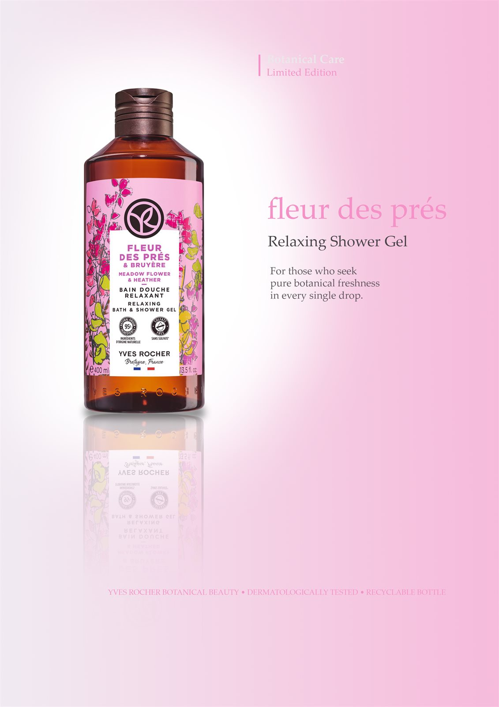
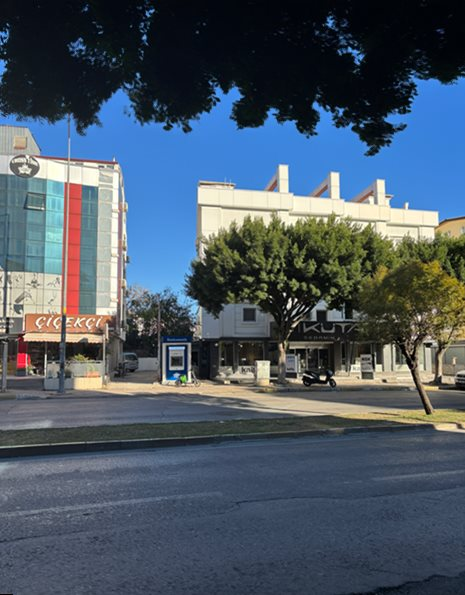
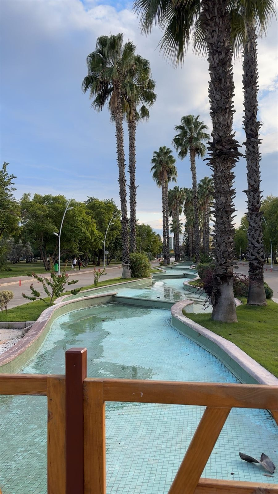
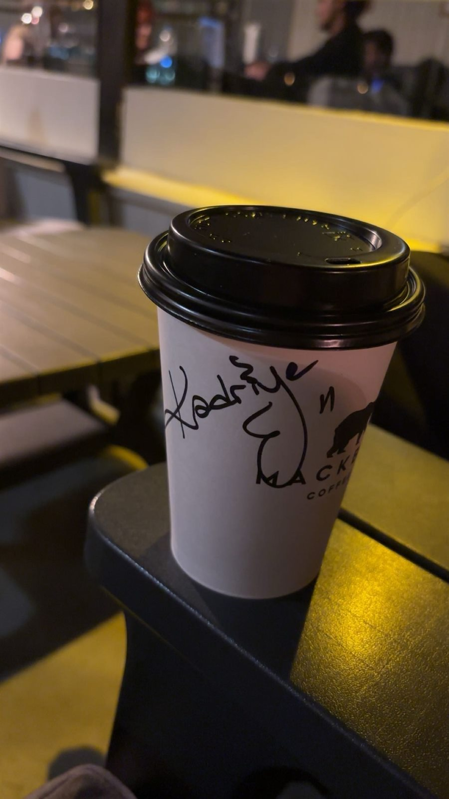
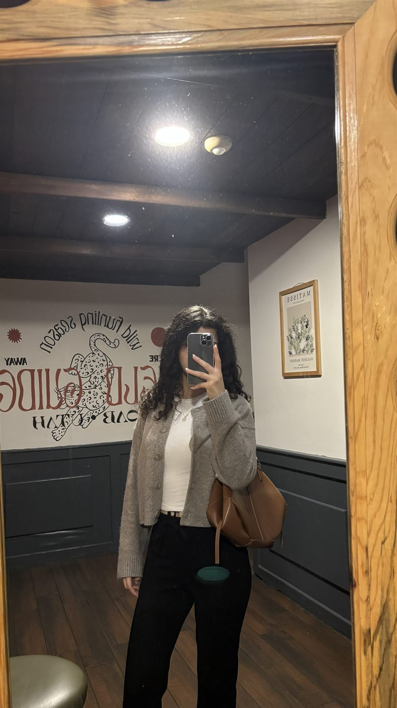
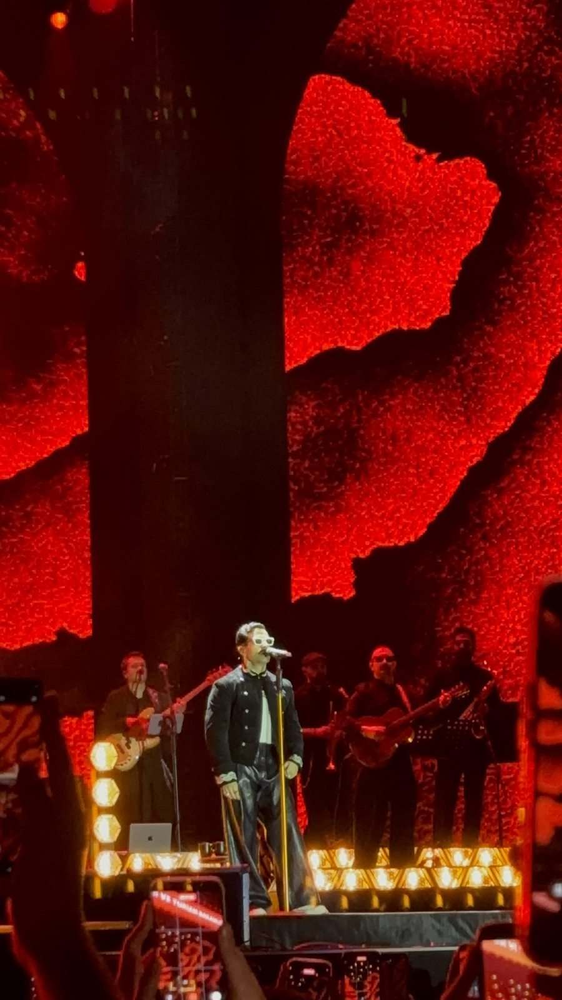

Görsel yakında

Ürün Tanıtımı Tasarımı
Bir ürünü öne çıkaran, sade ve dikkat çekici bir tanıtım görseli çalışması.
Kodla ve renkle hikâyeler kuruyorum.
Bilgisayar Programcılığı
Akdeniz Üniversitesi Teknik Bilimler MYO. Python, veritabanı ve grafik animasyonun buluştuğu yer.
Her satır kod, bir sonrakine açılan bir kapı.
Biraz daha kaydır: projelerim, fotoğraflarım ve beni anlatan birkaç satır seni bekliyor.

Kodun mantığını, tasarımın estetiğiyle buluşturmayı seviyorum.
Akdeniz Üniversitesi Teknik Bilimler MYO’da Bilgisayar Programcılığı okuyorum. Python ve veritabanlarıyla mantık kurmayı, Photoshop ve grafik animasyonla da o mantığa görünür bir yüz vermeyi öğreniyorum.
Adobe Photoshop ve web arayüzü üzerine dönem boyunca ürettiğim çalışmalardan bir seçki.

Bir ürünü öne çıkaran, sade ve dikkat çekici bir tanıtım görseli çalışması.

Siyah beyaz bir fotoğrafta yalnızca seçilen nesneyi renkli bırakan çalışma.

Aynı açıdan çekilmiş karelerden, kalabalığı silinmiş temiz bir sahne elde etme.
Beni yansıtan anlar: yürüyüşlerden, konserden, kahve molalarından ve mutfaktan.




